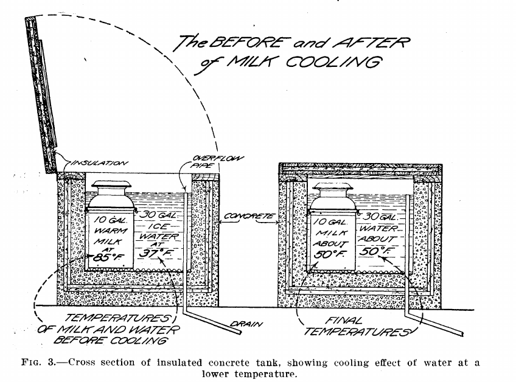
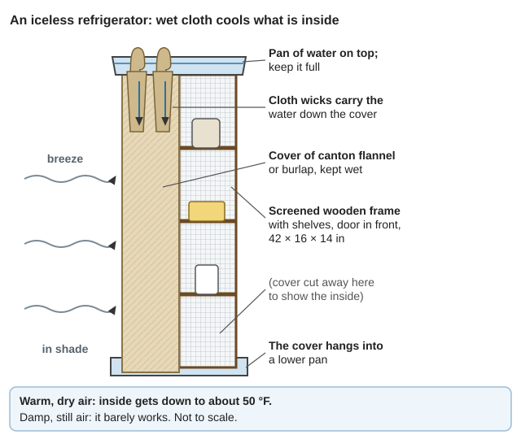
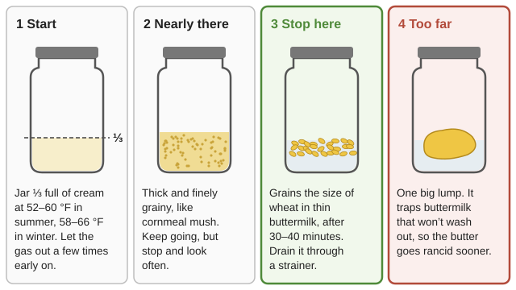
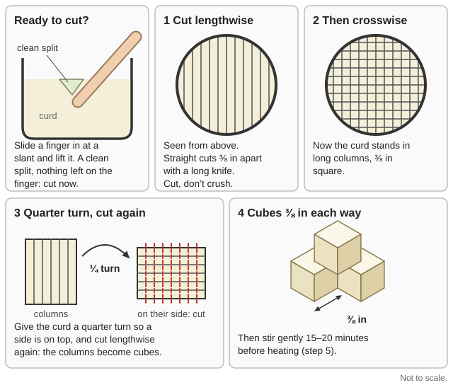
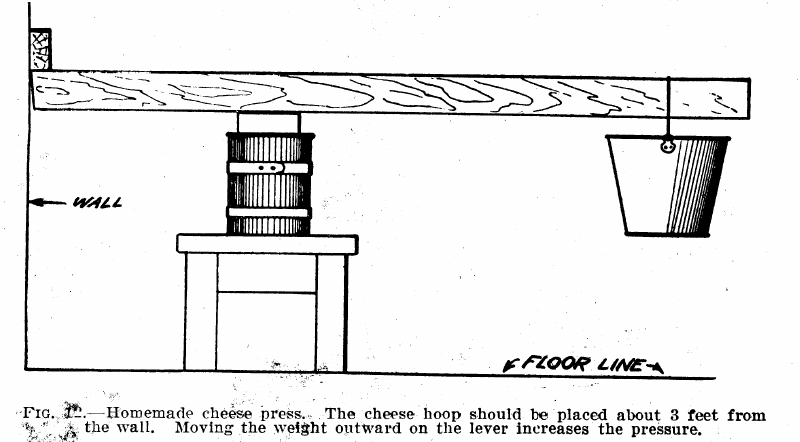

Guides › Food · Emergency · Index A–Z
How to milk cleanly, keep milk safe and cool with no power, and turn it into butter, buttermilk, ghee, yogurt, kefir and cheese that keep for weeks or months, from goats, cows or sheep. The animal itself (breeds, feed, kidding, udder health) is in the Goats guide. The books are in Animals\Dairy-Cheese, with the old USDA butter and cheese bulletins in Homestead-Skills\Food-Crafts-Tools, milk cooling in Food-Storage\Cooling-Without-Power, milk-borne disease in Animals\Veterinary, and the family cow in Animals\Cattle-Horses-Pigs. Where this guide works out a number it says (arithmetic); check it with the Unit Converter or the Practical Math guide.
The short version
- Raw milk can carry brucellosis, tuberculosis and Listeria. Pasteurize: 145 °F for 30 minutes or 161 °F for 15 seconds (UMN, p. 1). No thermometer? Bring it just to a boil. Children, pregnant women, the old and the sick never get raw milk or soft raw-milk cheese (Zoonoses, pp. 91–92).
- Cool milk below 50 °F within an hour. Above that, bacteria multiply very fast (Raising Healthy Cattle, p. 13). Spring water is often 65 °F (USDA FB 976, p. 15). Milk you can't cool becomes yogurt, cheese or ghee the same day (rule of thumb).
- Scald every pail, cloth and churn. Clean milk kept sweet two to three times as long as ordinary milk in the USDA's tests (FB 976, p. 5).
- Pasteurized milk won't sour cleanly by itself. Add a spoonful of last batch's yogurt, clabber or buttermilk as a starter (ILCA, p. 34; USDA FB 1451, p. 7).
- What keeps: ghee over 12 months (Practical Action, p. 4); butter salted to 3% up to 4 months cool and dark (ILCA, p. 49); hard cheese and feta in brine for months.
- Make hard cheese in the cool months; age it at 40–60 °F, turn it daily, and put cheesecloth over cellar windows against the skipper fly (USDA FB 1191, p. 15).
- Rennet comes from the stomach of a kid, lamb or calf that has had only milk. Never curdle milk with milkweed sap: milkweed poisons livestock (AIB 415, p. 71).
| Goat | Cow | Sheep | |
|---|---|---|---|
| Butterfat | 3.5–4.2% | 3.6% (Holstein) to 5.2% (Jersey) | about 7.9% |
| Cream | Rises very slowly, and only partly | Rises well in 24–36 hours | (no book data) |
| Butter | Good but pure white, like lard | Yellowest on spring pasture | Rich (rule of thumb) |
| Daily milk | About 1½ quarts averaged over a 10-month lactation | 10–20 quarts for a family cow | (no book data) |
Sources: fat, FB 920, p. 6, Practical Action, p. 3; goat cream and butter, FB 920, p. 7; cow cream, ILCA, p. 38; butter color, FB 876, p. 13; a "fair milker" goat gives 1,000 lb in 10 months (FB 920, p. 5; arithmetic); cow, Keeping One Cow, p. 19.
Goat cheese is better with a quarter to a third cow milk mixed in (FB 920, p. 7). Two does bred a few months apart keep milk coming all year (rule of thumb); see the Goats guide.
Milk to keep out of the house: the first 4–5 days after kidding (colostrum, for the kid) (FB 920, p. 28); clotted or bloody milk; and milk from an animal on antibiotics until the label's withdrawal time is over (see the Goats guide).
| Disease | How it reaches people | Signs in people | Signs in the herd |
|---|---|---|---|
| Brucellosis ("undulant fever") | Raw milk and soft raw-milk cheese; birth fluids | Fever that goes away and comes back, sweats, weakness; can cripple for life (Zoonoses, p. 30) | Abortions. Goats are the classic carrier (p. 29); a cow sheds it in milk up to 2 years (Cattle, p. 117) |
| Bovine TB (M. bovis) | Raw milk; children were the main victims (Zoonoses, p. 23) | Swollen, draining neck glands; belly, bone and spine TB | Slow weight loss, long cough, hard lumps in the udder (Cattle, p. 113) |
| Listeria | Raw milk, soft cheese | Worst for pregnant women (miscarriage), newborns, the old and the sick (Zoonoses, p. 91) | Circling, drooping ear and face in goats and cattle (p. 92) |
5–10% of the radioactive iodine a cow eats goes into her milk; it halves every 8 days. Keep milking animals in the barn on hay stored before the fallout. Don't dump contaminated milk: make it into butter or cheese and store it 1–2 months to let the iodine decay. Save clean or canned milk for babies (USDA AH 234, p. 22). See the Nuclear Fallout guide.
With a thermometer (UMN, p. 1):
With no thermometer:
Why hurry: milk leaves the udder a little above 90 °F. Ordinary milk soured in 12 hours at 100 °F and clean milk in 36; at 40 °F they kept about 7 and 16 days (FB 976, p. 5; chart). In shade at 61 °F milk is still 82 °F after 3 hours; in running water it reaches 61 °F in 1 hour (ILCA, p. 33). Keep it below 50 °F (FB 976, p. 16).
Springhouse or spring tank (FB 976, pp. 9–15):

Even three times the milk's volume of ice water only brings 85 °F milk down to about 50 °F: use plenty of water, and cover and insulate the tank (FB 976, p. 7).A creek: a lidded can tied in a cold stream works (Raising Healthy Cattle, p. 13). Our creeks and the Illinois River run warm by midsummer, so measure first, use a shaded side-channel or deep pool, and weight and lash the lid against raccoons and bears (rule of thumb).
Evaporative cooler ("iceless refrigerator") for butter, cheese and cooled milk (USDA 1917, p. 3): a 42 × 16 × 14-inch screened frame, covered in canton flannel or burlap, with cloth wicks from a pan of water on top; stand it in shade and a breeze. In warm dry air it gets down to about 50 °F; in damp weather it barely works. Our dry summer afternoons suit it (rule of thumb). Brick and charcoal versions are in the Root Cellar guide.

Water wicks from the top pan into the cloth cover, and the breeze dries it and cools the inside (a diagram drawn for this guide).Hold the cold: chill milk first, then shut it in a hay-box: it "may make many hours difference"; with a little cracked ice a quart holds 24 hours in hot weather (USDA FB 771, p. 17). Ice and cold-water numbers: the Storing Energy guide, "Cold: storing winter for summer". Summer plan (rule of thumb): milk at dawn and dusk, cool at once, drink the morning's milk that day, and turn the rest into yogurt, cheese, butter or ghee before the afternoon heat.
| Method | How | Fat left in the skim milk |
|---|---|---|
| Shallow pan | Fresh milk in a pan 16–24 in across and 4 in deep, in a cool place; skim with a ladle after 36 hours | 0.5–0.6%, or more: up to a third of the butterfat lost |
| Deep-setting | Fresh milk in a tall narrow "shotgun" can (about 8½ × 20 in) in ice water 12 hours or cold water 24 hours; draw the skim milk off a bottom tap | 0.2–0.5% |
| Hand-cranked separator | Milk at 90 °F or warmer, crank at the stated speed, flush with skim milk at the end | a trace |
Sources: ILCA, p. 38 (pan and can); FB 876, pp. 4–6; can size p. 21.
Butter from cream (FB 876, pp. 8–15, 23–24):

Stop when the grains are the size of wheat, before they gather into a lump (a diagram drawn for this guide).Butter from soured whole milk (goat milk, or no separator) (ILCA, pp. 60–62): collect milk over 2–3 days until it is pleasantly sour; fresh milk churns slowly and loses fat. Churn at 63–66 °F (17–19 °C), the jar a third to half full. Warmer than 68 °F churns fast but loses fat: at 79 °F as little as 60% comes out as butter. Colder can take 5 hours (products chart).
Keeping butter without a fridge:
Cultured buttermilk: skim milk heated to 203 °F, cooled to 68–77 °F, seeded with 1–2% starter, 16–20 hours (Practical Action, p. 1).
📚 Go deeper: USDA FB 876 Making Butter on the Farm — every step and every fault; ILCA Rural Dairy Technology — churning, overrun and keeping butter.
Ghee is butterfat with the water and milk solids cooked out, so germs have nothing to grow in. It keeps more than 12 months at room temperature (Practical Action, p. 4).
Clarified butter with less fuel: melt butter in water at about 176 °F, let the fat set on top as in a deep-setting can, drain the water off, then heat the fat just long enough to drive off the last moisture. It kept well through a 5-month test (ILCA, p. 49).
A pound of butter (80% fat) gives about ¾ lb of ghee (ILCA, p. 45; arithmetic). In fire season do the long boil on the stove indoors or before dawn, never over an open fire outside (rule of thumb).
Soured milk keeps where fresh milk won't: the acid stops most germs, though not mold (ILCA, p. 34).
Yogurt (Practical Action, pp. 1–4):
Clabber and soured milk: milk soured naturally in a warm room for 1–2 days keeps 3–8 days (p. 1). The ILCA way keeps longer: a vessel smoked hot with burning embers (they used olive and acacia; a clean hardwood such as oak (rule of thumb)), the milk fermented slowly at 61–64 °F for 2–4 days, keeps 15–20 days; warmer, it wheys off and gets gassy (ILCA, p. 59). Pouring off the whey and topping up with fresh milk for up to a week concentrates it and keeps it longer still (p. 60). Pasteurized milk must be seeded; it won't sour cleanly alone (p. 34).
Kefir needs no warm box (ILCA, p. 59): heat milk to 185 °F for 30 minutes, cool it, add kefir grains (lumps in which the bacteria and yeasts live), and leave about 12 hours at 72 °F. Lift the grains out with a clean spoon into the next jar of milk. They multiply; give spares away or feed them to hens (rule of thumb).
Keeping cultures alive for years:
Soft cheeses are quick and need little gear, but they keep only days: about 3 days cold, 5 in brine (Practical Action, p. 1). Make them from pasteurized milk.
Paneer or queso blanco (lemon or vinegar cheese, no rennet) (ILCA, pp. 50–52; Practical Action, p. 2):
Queso fresco is the same fresh cheese set with rennet instead of acid: make the one-gallon rennet cheese (hard-cheese section) up to bagging the curd, salt the curd, press it lightly a few hours, and eat it within a few days (rule of thumb).
Chèvre-style goat cheese (soft, spreadable, a little rennet): FB 920 calls French goat cheese "Chevret" (p. 7); this is the USDA rennet cottage-cheese method (FB 1451, pp. 9–11):
Cottage cheese with no bought culture (FB 1451, pp. 6–7): let skim milk clabber at about 75 °F (about 30 hours) until clean and pleasantly sour; cut it in 2-inch pieces; set the pan in hot water to bring it to 100 °F and hold 30 minutes, stirring gently (hotter makes it tough); drain in a cloth bag, rinse cold, salt. A gallon makes about 1½ lb. Keep it in glass or earthenware and eat it soon: 36 hours at room temperature puts it off flavor (p. 10).
Rennet is an enzyme from the true (fourth) stomach, the abomasum, of a suckling calf. After weaning, the calf makes pepsin instead (ILCA, pp. 49–50), so stomachs that have digested anything but milk make weak rennet. Cheesemakers hold that kid or lamb rennet suits goat or sheep milk (Book of Cheese, p. 55).
Making rennet (Book of Cheese, pp. 55–56):
Test every batch: homemade rennet varies in strength and spoils (p. 55). It works slowly below 70 °F and best at 84–94 °F; dilute it in about 40 times its volume of cold water before stirring it in (pp. 95–96). Warm a quart of milk to 86 °F, stir in a measured half-teaspoon of diluted rennet, and time it: aim for a curd that splits cleanly in 25–40 minutes, then scale up (rule of thumb). Bought liquid rennet runs about 2 teaspoons per 100 lb of milk (FB 1191, p. 6).
Plant rennets (Practical Action, p. 1): papaya sap, fig bark, and the stems or leaves of two tropical plants also curdle milk. Fig trees grow in valley yards; a few drops of the milky sap from a green fig stem per quart of warm milk is the old way. The sap burns skin, so wear gloves (rule of thumb). Thistle flowers (cardoon) and nettle are traditional too (rule of thumb).
The USDA's simple farm Cheddar ("granular" process) from whole milk: 5–6 hours, then minutes a day (FB 1191, pp. 4–17). Cool nights make the best cheese; hot weather breeds gas germs (p. 4). Use milk under 12 hours old, kept at 60 °F or below (p. 5). Pasteurize it if you can, then add ¼–½ cup of clean buttermilk or clabber per gallon as starter (rule of thumb).
For 4 gallons (about 34 lb) of milk, making about 3½ lb of cheese (arithmetic from p. 5):

Steps 3 and 4: test the set with a finger, then cut the curd into ⅜-inch cubes (a diagram drawn for this guide).Smaller batch (1 gallon, goat or cow) (FB 920, p. 8): a junket tablet dissolved in a little cold water into a gallon of milk at 88 °F; cut after 30 minutes into 1-inch cubes; warm the pot in 100 °F water so the curd reaches 98 °F in an hour; bag it 2–3 hours; press between two plates in a can under a weight 24 hours; rub with salt two days running, then daily for a week. Ready at 10 days.

The hoop stands about 3 ft from the wall; sliding the pail of stones outward along the pole presses harder (FB 1191, p. 15).Feta needs no press and keeps for months under brine with the air kept out. Cow, sheep or goat milk all work (ILCA, pp. 52–56; steps):
Halloumi, cooked in its own whey and kept in whey brine (ILCA, pp. 52–53; steps): set whole milk with rennet at 90–95 °F; cut the curd; warm it to 104 °F stirring 20 minutes; drain and press 2 hours. Meanwhile heat the whey to 176–194 °F: the whey cheese that rises is skimmed off. Cut the pressed curd into 4 × 4 × 1¼-inch slabs and simmer them in the hot whey until they float and turn soft and stretchy; fold them, rub with dry salt and dried mint, cool, and store in cool, boiled whey brine (15% salt). Ripen about 30 days; it keeps several months below 54 °F.
Salt is the main preservative: it pulls out water and slows the germs that remain (Practical Action, p. 1): in the curd for hard cheese, brine for fresh.
Where to age it:
Care: turn every cheese daily so it dries evenly and doesn't stick or mold to the shelf; if the cloth loosens and the rind cracks, rub it with butter. Cracks let in flies and mold (Book of Cheese, p. 284). Wipe mold off with a dry cloth; if it molds badly, scrub it with strong brine and move it somewhere drier (FB 1191, p. 15). Cover cellar windows with cheesecloth: the cheese-skipper fly gets through window screen (same page; Cheese fly).
Coating cuts drying and mold. Coat once the rind is dry, 4–6 days to 2 weeks after pressing (Book of Cheese, p. 286):
Cut cheese: wrap it in a cloth wrung almost dry, then paper, and keep it cool; don't shut it fully airtight, which makes it mold faster (Book of Cheese, p. 396).
📚 Go deeper: USDA FB 1191 — farm Cheddar with home-made gear; The Book of Cheese, pp. 281–293 — curing rooms and defects (old book: raw-milk methods); ILCA — queso blanco, halloumi, feta, yields.
A hard cheese leaves 8–9 lb of whey for every pound of cheese (arithmetic). Whey can be a drink, become whey cheese, or feed animals (Practical Action, p. 2).
| Months | Milk | What to make (rule of thumb) |
|---|---|---|
| Jan–Feb | Little; kids due from February | Eat stored cheese, ghee and butter. Scald and mend gear. Make rennet from milk-fed bucklings or bull calves butchered young |
| Mar–May | Spring flush; cool nights; springs and cellar cold | Hard cheese for winter (cool nights suit it, FB 1191, p. 4); butter for storing; start new cultures |
| Jun–Sep | Steady; 90–100 °F afternoons; fire season | Milk at dawn and dusk; spring tank and evaporative cooler; yogurt, kefir, feta, halloumi and ghee the same day. Ghee on the stove indoors, no outdoor fires |
| Oct–Dec | Tapering; rains; cellar cooling | Cheeses curing in the cellar; salt butter down; dry off does and breed them (see the Goats guide) |
| Product | Milk or cream in | Comes out | Source |
|---|---|---|---|
| Butter | 1 gal of 30% cream | about 3 lb | FB 876, p. 3 |
| Butter | whole milk at 4% fat, all fat recovered | 1 lb from about 9 qt (19.4 L per kg) | ILCA, p. 48 (arithmetic) |
| Butter, old rule | 1 qt a day | 1 lb a week (7 qt per lb): true for Jersey-rich milk | Keeping One Cow, p. 18 |
| Ghee | 1 lb butter | about ¾ lb | (arithmetic) |
| Farm Cheddar | 100 lb (11⅝ gal) of 4% milk | about 10½ lb: ~1 lb per 1⅛ gal | FB 1191, p. 5 |
| Any rennet cheese, estimate | 100 lb milk | (2.3 × fat %) + 1.4 lb | ILCA, p. 56 |
| Feta, halloumi | 9 kg (about 2⅓ gal) | 1 kg (2.2 lb) | ILCA, pp. 52, 56 |
| Queso blanco | 8 kg | 1 kg | ILCA, p. 52 |
| Paneer (moist) | 1 liter | 250 g | Practical Action, p. 2 |
| Cottage cheese | 1 gal skim milk | about 1½ lb | FB 1451, p. 6 |
Goat milk at 3.5% fat gives a little less butter and cheese than these 4% figures; sheep milk much more (rule of thumb). Hand skimming leaves up to a third of the fat in the skim milk (FB 876, p. 5), so by hand expect 1 lb of butter from 3 gallons or more (arithmetic).
For a family (arithmetic, rule of thumb):
| Problem | Likely cause and fix |
|---|---|
| Milk sours in hours | Warm, or dirty pails. Cool below 50 °F within an hour; scald everything (FB 976, p. 5) |
| Milk tastes "goaty" or weedy | Buck kept near the does; wild garlic or strong weeds eaten near milking time; slow cooling; late lactation (FB 920, pp. 25, 29) |
| Ropy, slimy milk or cream | Germs from unscalded gear. Scald everything; pasteurize and use a good starter (FB 876, p. 18) |
| Butter won't come | Too cold; cream too thin, too rich or too sweet; churn too full; a late-lactation animal; hard-fat feeds. Sour the milk, warm it to the churning heat, fill ⅓ (FB 876, pp. 18–19; ILCA, p. 60). If you must add water, never over 77 °F (ILCA, p. 46) |
| Butter soft, white, greasy or "leaky" | Churned too warm or too fast; overworked (FB 876, pp. 11–12, 15) |
| Butter streaked or mottled | Salt uneven: work it a little more (p. 16) |
| Butter goes rancid or cheesy | Buttermilk left in, warmth, air or light (FB 876, p. 11; Practical Action, p. 5). Wash well, salt to 3%, or make ghee |
| Yogurt thin or didn't set | Too cool, or milk too hot when the starter went in (Practical Action, p. 4) |
| Clabber or yogurt gassy, yeasty, wheying off | Too warm; contaminated starter. Replace the starter (ILCA, p. 59; Practical Action, p. 7) |
| Curd won't set | Rennet weak or old, or milk below 70 °F (Book of Cheese, pp. 95–96) |
| Cheese sour, dry, mealy | Too much acid or starter, whey left in too long (FB 1191, p. 9; Book of Cheese, p. 290) |
| Cheese hard and "corky" | Curd firmed too long, cooked too hot, too much salt, cured too warm and dry (Book of Cheese, p. 292) |
| Cheese puffs up, full of pinholes | Gas germs from dirty milk or gear, or hot weather. Clean up, use more starter, cure it cooler (Book of Cheese, pp. 292–293; ILCA, p. 57) |
| Fruity, strawberry taste | Milk and whey carried in the same cans; dirty whey tubs (Book of Cheese, p. 290) |
| Mold | Hard cheese: wipe it, scrub with strong brine, move it somewhere drier (FB 1191, p. 15); cut an inch past mold that went in. Soft cheese, yogurt or butter moldy all through: throw it out (rule of thumb) |
| Jumping maggots ("skippers") | Cheese skipper fly: cheesecloth on windows, no cracks in rinds (FB 1191, p. 15) |
| Feta soft, slimy or moldy | Air in the crock, or weak brine (ILCA, p. 56) |
| Soft cheese smells rotten, or a sealed jar bulges | Discard it unopened. Cheese poisoning, botulism included, has killed people (Book of Cheese, p. 394) |
Don't can milk, butter or soft cheese in a water bath: milk is a low-acid food that needs a pressure canner (see the Preserving Food guide), and no tested home method exists for canning butter (rule of thumb). Keep milk fat as ghee instead.
| Book says | Do this instead |
|---|---|
| Pasteurize at 140 °F (60 °C) for 30 minutes (Zoonoses, p. 31) | Too low. 145 °F for 30 minutes, 161 °F for 15 seconds, or bring to a boil |
| Add hydrogen peroxide to milk to keep it, "far preferable to milk sterilized by heat" (Henley's, p. 477) | The same page admits it doesn't kill TB. Cool and pasteurize |
| Soft cheese from raw milk (Book of Cheese, p. 167; FB 920, p. 8) | It carries Listeria and brucellosis. Pasteurize milk for soft cheese |
| Dip cheese in paraffin heated to 240 °F (FB 1191, p. 15) or 220 °F (Book of Cheese, p. 287) | Fire and burn hazard. Melt wax in a can set in water, never unattended |
| Wrap cheese in tin foil that is 2½–8% lead (Henley's, p. 476) | Wax, cloth and fat, or brine |
| Cheese hoop of galvanized sheet metal (FB 1191, p. 13) | Acid curd and whey eat zinc. Wood, food-grade plastic or stainless (rule of thumb) |
| Butter coloring, 20–35 drops a gallon, and old dairy "preservatives" (FB 876, p. 13) | Not needed. Salt to 3%, or make ghee |
| Send whey home for the pigs in the milk cans (Book of Cheese, p. 49) | Spreads disease. Boil whey for pigs; keep milk cans for milk |
📚 Go deeper: UMN — today's home pasteurizing standard; Zoonoses — brucellosis, TB and Listeria from animals.
Look before you try it. 🖼️ = drawings in the books on this drive; 📷 = photos in the offline Wikipedia.
Clean milk and cooling
Cream, butter and ghee
Cultures and soft cheese
Hard and brined cheese